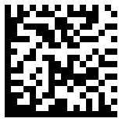

In this project, we developed a 2D barcode-reading application for the iPhone that is capable of reading URLs from barcodes and launching them using the phone's built-in browser.
In this project, we developed a 2D barcode reader for the iPhone that
can recognize URLs embedded in QR codes, and launch URLs in the phone's
built-in browser. In this report, we will discuss Related Work, the Background of the iPhone and 2d barcodes, the
program's Architecture, Program Documentation, our Task List, and References.
There are many 2D barcode readers and 2D barcode-reading support
libraries in existence. Here is a list of some of them. The ones that
have source code available are marked by an asterisk, *.
The iPhone is a mobile phone developed by Apple Incorporated.
Although it is officially a closed platform, the community that has
rallied around the phone has made great strides in making the platform a
viable programming environment.
2D barcodes, like the ones pictured above, can hold much more
information than the typical 1D barcodes. Instead of containing a string
of numbers, 2D barcodes typically contain much richer information, like
URLs, contact information, and text snippets that can be hundreds of
characters long (or even longer).
There are many formats of 2D barcode in use today. The majority of 2D
barcodes are in QR Code format, but there is a growing minority of
Datamatrix codes coming into existence due to Datamatrix's superior data
density and its support in the industrial / government sectors.
The application is written in Objective-C and and is approximately
7000 lines long.
The application is split into two halves.
The first half is responsible for accessing the camera, setting up
the UI, and using any data that comes out of the second half of the
application. It is also responsible for launching the iPhone's web
browser once a URL is detected. Additionally, it contains a bit of
mystery code required to run on the iPhone.
The second half is the QR code recognizer. It receives image data
from the first half of the application and communicates back the decoded
information.
The program first gains control in the ReaderApplication.m file in
the method applicationDidFinishLaunching. Here, the main view for the
application is set up.
After applicationDidFinishLaunching returns, the camera has been
activated, and the only input the user can provide is a touch. Touches
are detected in the mouseDown method. Once called, the mouseDown method
immediately calls the takePicture method.
The takePicture method takes a picture as long as the application is
not already trying to decode a previous picture. Once the picture is
taken, control is passed to cameraController which then passes the
preview object to the process method.
The process method initializes a new QRCodeDecoder and QRCodeImage.
The QRCodeImage is initialized to the picture argument using a
CoreGraphics bitmap context. The QRCodeDecoder is initialized with a
retry counter and results list. The image is then passed to the decoder.
The decoder first searches for a finder pattern, then orients its search
based on the location of the finder pattern. From there, the standard
search routine is performed and the data is decoded. If the decoder
succeeds, then a string is passed back containing the contents of the 2D
barcode and control is passed to the succeed method. If it fails, then
an exception is thrown, caught, and control is passed to the failure
method.
Assuming the barcode is successfully decoded, the success method is
called, which converts the string into a URL object and sends it to the
built-in browser.
The example reader program that comes with libdmtx already supported
input in PNG and TIFF format. I modified it slightly to remove the
dependency on the TIFF decoder library. Then, I used Erica Sadun's snap
application to take screen shots of the camera preview in PNG format.
The idea was to recognize both QR codes and Datamatrix codes in
parallel. However, when trying to use Erica's snap program from inside
the Reader application, system-specific conflicts occurred. It seems
that when two "purple" applications are launched the one launched last
crashes with an error.
Related Work
Background
iPhone
2D Barcodes
http://google.com encoded in a QR Code.

http://google.com encoded in a Datamatrix code.
Architecture
Path of Execution
Failed Architectures
2-Format simultaneous recognition with libdmtx
Program Documentation
Task List
References